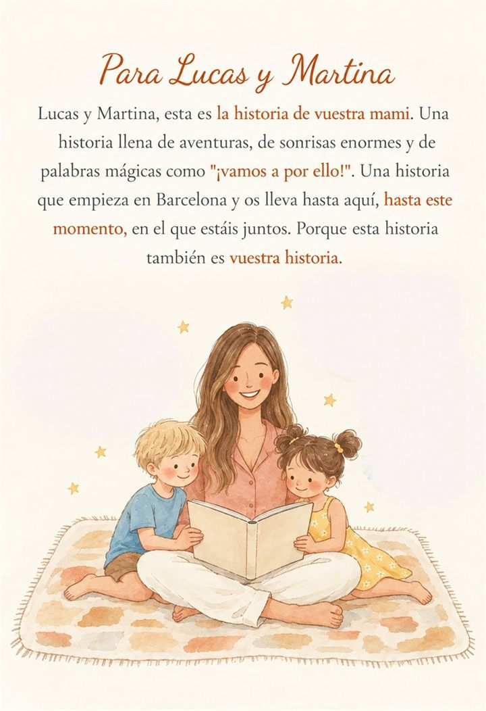

Antes de ser "mamá" fue una niña que no paraba de reír, una chica que viajó, que se equivocó y que se atrevió. Convertimos su historia real en un cuento personalizado ilustrado en acuarela, para que sus hijos la descubran, y para que ella, al leerlo, se reconozca otra vez.
Crear su libro →
Para sus hijos, mamá es la que sabe dónde está todo. Pero antes de eso hubo una niña con sus travesuras y una chica con sus planes. Esas historias casi nunca se cuentan, y son justo las que hacen que los niños la miren con otros ojos: con admiración, con risa y con cariño.
En el libro contamos su historia con su nombre y sus rasgos reales, para que sus hijos descubran a la persona que había antes de "mamá".
Le contáis su historia en secreto y los pequeños le dan la sorpresa el primer domingo de mayo.
Para la madre que ya es abuela: sus hijos reúnen sus recuerdos y el libro es para que lo lean sus nietos.
Hay madres que quieren contar su historia con su propia voz, para dejársela a sus hijos. Mira un cuento con tu historia.
No hace falta escribir ni preparar nada. Te acompañamos paso a paso y respondes con notas de voz, como si se lo contaras a una amiga. Cosas como:
Y si te apetece inspirarte, aquí tienes ideas para conocer mejor su historia.
El libro llega entre 2 y 3 semanas después de enviarnos la historia. El Día de la Madre en España es el primer domingo de mayo, así que lo ideal es enviarnos la historia a principios de abril.
Sí. La historia nos la puede contar el papá, los abuelos, una hermana o una amiga, sin que mamá lo sepa. Respondéis con notas de voz y se guarda solo.
Sí. El libro empieza con una dedicatoria para ellos y aparecen en la parte de la familia, cuando llega cada uno.
Pregunta a quien la conoció entonces: sus hermanas, sus amigas o sus padres. Cada uno puede aportar una anécdota, y el libro queda más completo.
Claro. En el formulario puedes indicarnos qué temas delicados prefieres no tocar, y el libro solo cuenta lo que tú quieras.